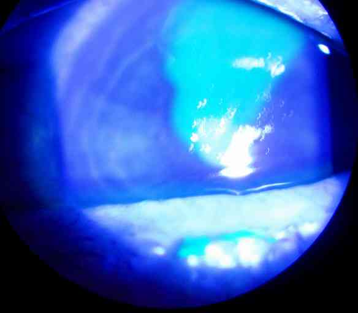

Bienvenue Sur Medical Education
Abrasion cornéenne
Spécialité : ophtalmologie /
Points importants
-
A instiller immédiatement : gouttes anesthésiantes :
-
soulage la douleur
-
lève le blépharospasme pour l'examen
-
A faire ensuite :
-
paracétamol
-
± pansement occlusif non compressif
-
± cycloplégie
-
L'anesthésie cornéenne prolongée (> quelques heures) :
-
retarde la cicatrisation
-
peut entrainer de graves complications (opacification ou perforation cornéenne)
-
Cicatrisation habituelle dans les 48 heures
-
Sortie :
-
AT 24-48h si douleur importante et/ou vision monoculaire (pupille dilatée ou oeil occlus par le pansement)
-
contrôle ophtalmologique entre 48 et 72 heures
-
informer le patient sur la dilatation pupillaire et la protection préventive oculaire
Présentation clinique / CIMU
SIGNES FONCTIONNELS
-
Douleur oculaire :
-
immédiate, souvent très importante (9/10)
-
parfois juste une impression de CE sous-palpébral
-
peut-être retardée
-
si absente : suspecter anesthésie cornéenne associée
-
Blépharospasme (occlusion palpébrale réflexe avec résistance à l'ouverture forcée), larmoiement, baisse d'acuité visuelle brutale (flou)
-
Hyperhémie conjonctivale
CONTEXTE
- soulage la douleur
- lève le blépharospasme pour l'examen
- paracétamol
- ± pansement occlusif non compressif
- ± cycloplégie
- retarde la cicatrisation
- peut entrainer de graves complications (opacification ou perforation cornéenne)
- AT 24-48h si douleur importante et/ou vision monoculaire (pupille dilatée ou oeil occlus par le pansement)
- contrôle ophtalmologique entre 48 et 72 heures
- informer le patient sur la dilatation pupillaire et la protection préventive oculaire
Présentation clinique / CIMU
SIGNES FONCTIONNELS
-
Douleur oculaire :
- immédiate, souvent très importante (9/10)
- parfois juste une impression de CE sous-palpébral
- peut-être retardée
- si absente : suspecter anesthésie cornéenne associée
- Blépharospasme (occlusion palpébrale réflexe avec résistance à l'ouverture forcée), larmoiement, baisse d'acuité visuelle brutale (flou)
- Hyperhémie conjonctivale
CONTEXTE
Terrain
- Syndrome d'érosion épithéliale récidivante (EER) : crises douloureuses violentes survenant brutalement et durant quelques heures à quelques jours, d'origine génétique ou post-traumatique ancien
- Vérification du statut vaccinal antitétanique
Traitement
- Eventuel traitement pris avant l'arrivée aux urgences
Antécédents
- Instabilité épithéliale post-traumatique : abrasion susceptible d'extension
- Métier à risque (manutention, jardinier) : suspecter contamination bactérienne
- Port de lentille de contact : suspecter CE résiduel sous-palpébral et/ou infection
- Chirurgie oculaire
Circonstances de survenue
- Traumatisme
- Syndrome de la lentille de contact fantôme : lentille perdue dans la journée, épithélium cornéen ôté à sa place avec insistance le soir
- CE conjonctival sous-palpébral
- Coup d'ongle accidentel sur cornée
EXAMEN CLINIQUE
- Examen sous anesthésie topique, si douleur avec blépharospasme : chlorhydrate d'oxybuprocaïne, une goutte, attendre 15 secondes
- Examen de l'oeil en lumière bleue (ou éventuellement verte) après instillation d'une goutte de fluorescéine (couleur orange, unidose) : lésion « prenant » la fluorescéine, teintée en vert, sans signe de Seidel (lavage rapide de la fluorescéine, témoin de fuite par plaie transfixiante)
 _1 Photo Abrasion cornéenne
-
Eliminer un corps étranger (CE) :
- intra-cornéen ou sous-palpébral
- savoir retourner le tarse palpébral supérieur
CIMU
- Tri 1 : si douleur intense
- Tri 2 : dans les autres cas
Diagnostic étiologique
-
Eliminer un CE sous-palpébral, une instabilité épithéliale connue (mauvaise adhérence épithéliale à la couche cornéenne sous-jacente, peut être due à un traumatisme ancien ou liée à un terrain génétique, risque de récurrence)
-
Contexte évocateur :
-
traumatisme direct (ongle, branche, sable, pierre)
-
traumatisme lié à la manipulation de lentille de contact
Diagnostic différentiel
-
Corps étranger intra-cornéen
-
Plaie conjonctivale ou transfixiante de la cornée
Traitement
TRAITEMENT AMBULATOIRE
- traumatisme direct (ongle, branche, sable, pierre)
- traumatisme lié à la manipulation de lentille de contact
Diagnostic différentiel
- Corps étranger intra-cornéen
- Plaie conjonctivale ou transfixiante de la cornée
Traitement
TRAITEMENT AMBULATOIRE
Stabilisation initiale
- Soulager la douleur par anesthésie topique (de surface) dès l'accueil
Suivi du traitement
- Oter un CE (après avoir retourné le tarse palpébral supérieur en rinçant par instillation de NaCl 0,9% ou si CE visible avec coton tige humidifié au NaCl 0,9%)
- Cycloplégie transitoire (dilatation pupillaire et paralysie de l'accommodation) si douleur importante
- Pansement occlusif non compressif si douleur importante
- Antalgiques de classe 2 (paracétamol codéine plus efficace que dextropropoxifène)
- Compléter la VAT
- Antibiothérapie topique (facultative, si contaminant infectieux suspecté)
-
Pansement oculaire :
-
indiqué si :
- lésions > 10 mm2
- érosions récurrentes
-
non indiqué si :
- petites abrasions
- infection secondaire
-
indiqué si :
MEDICAMENTS
- Instiller dans l'oeil atteint
-
Soulager :
- chlorhydrate d'oxybuprocaïne (agit en 15 sec pendant environ 30 min) ou tétracaïne (agit en 2 min pendant environ 60 min), 1 goutte, ne pas renouveler
- paracétamol codéine effervescent 500 mg/30 mg cp : 1 (< 50 Kg) à 2 (= 50Kg)
- Cycloplégie : homatropine bromhydrate 1% : 1 goutte
- Antibiothérapie : collyres tobramycine ou rifamicine : 1 goutte
-
Maintenir la paupière fermée : rondelle oculaire et sparadrap antiallergique :
- coller 2 bandes horizontales de sparadrap sur la paupière supérieure
- puis placer la rondelle oculaire sur la paupière
- NB : Les AINS locaux sont dangereux car soulagent par anesthésie cornéenne
Surveillance
CLINIQUE
-
Intensité douloureuse (EN ou EVA)
-
La douleur doit s'estomper complètement (en 15 sec à 2 min) sous anesthésie de surface
Devenir / orientation
CRITERES DE SORTIE DU SAU
-
Consultation d'ophtalmologie dans les 48-72 heures si diagnostic évident, CE absent ou ôté
-
Consultation d'ophtalmologie en urgence si doute sur diagnostic ou CE persistant
ORDONNANCE DE SORTIE
-
Celluvisc® unidose : 1 goutte x 5/j pendant 5 jours
-
Cycloplégie : homatropine bromhydrate 1% : 3 x 1 goutte le premier jour (dilatation de la pupille aussi 2-3 jours après arrêt)
-
Paracétamol codéine effervescent 500 mg/30 mg : 1 (< 50 kg) à 2 (> 50 kg) x 3/j, pendant 2 jours
-
Si contaminant infectieux suspecté :
-
collyres tobramycine ou rifamicine : 1 goutte x 3/j, pendant 5 jours
-
ne pas arrêter avant 5 jours sauf si allergie (rare)
-
Si érosion volumineuse :
-
pommade ophtalmique vitamine A : 1/j le soir pendant 3 jours
-
rondelle oculaire et sparadrap antiallergique : application sur la paupière fermée 48h
RECOMMANDATIONS DE SORTIE
-
Ne pas conduire et limiter les manipulations tant que la pupille est dilatée
-
Porter une protection solaire visuelle tant que la pupille est dilatée
-
Revenir aux urgences si douleurs persistantes après 48h
-
Consultation ophtalmologique dans les 48 à 72h pour contrôler la cicatrisation
-
Si récurrences fréquentes : consultation ophtalmologique pour laser PKT (photokératectomie thérapeutique) sans urgence
-
Porter des lunettes de protection lors d'activité à risque
Mécanisme / description
-
L'épithélium cornéen se régénère en règle en 48h
-
La vision troublée revient progressivement en une semaine, parfois plus
-
Les nerfs sensitifs cornéens se terminent dans l'épithélium, d'où la douleur
Bibliographie
-
Carley F, Carley S. Towards evidence based emergency medicine: best BETs from the Manchester Royal Infirmary. Mydriatics in corneal abrasion. Emerg Med J. Jul 2001;18(4):273
-
Hersh PS, Shingleton BJ, Kenyon KR. Anterior segment trauma. In: Albert DM, Jakobiec FA, eds. Principles and Practice of Ophthalmology. 1994:3384-85
-
Thyagarajan SK, Sharma V, Austin S, Lasoye T, Hunter P. An audit of corneal abrasion management following the introduction of local guidelines in an accident and emergency department. Emerg Med J. Jul 2006;23(7):526-9
Devenir / orientation
CRITERES DE SORTIE DU SAU
- Consultation d'ophtalmologie dans les 48-72 heures si diagnostic évident, CE absent ou ôté
- Consultation d'ophtalmologie en urgence si doute sur diagnostic ou CE persistant
ORDONNANCE DE SORTIE
- Celluvisc® unidose : 1 goutte x 5/j pendant 5 jours
- Cycloplégie : homatropine bromhydrate 1% : 3 x 1 goutte le premier jour (dilatation de la pupille aussi 2-3 jours après arrêt)
- Paracétamol codéine effervescent 500 mg/30 mg : 1 (< 50 kg) à 2 (> 50 kg) x 3/j, pendant 2 jours
-
Si contaminant infectieux suspecté :
- collyres tobramycine ou rifamicine : 1 goutte x 3/j, pendant 5 jours
- ne pas arrêter avant 5 jours sauf si allergie (rare)
-
Si érosion volumineuse :
- pommade ophtalmique vitamine A : 1/j le soir pendant 3 jours
- rondelle oculaire et sparadrap antiallergique : application sur la paupière fermée 48h
RECOMMANDATIONS DE SORTIE
- Ne pas conduire et limiter les manipulations tant que la pupille est dilatée
- Porter une protection solaire visuelle tant que la pupille est dilatée
- Revenir aux urgences si douleurs persistantes après 48h
- Consultation ophtalmologique dans les 48 à 72h pour contrôler la cicatrisation
- Si récurrences fréquentes : consultation ophtalmologique pour laser PKT (photokératectomie thérapeutique) sans urgence
- Porter des lunettes de protection lors d'activité à risque
Mécanisme / description
-
L'épithélium cornéen se régénère en règle en 48h
-
La vision troublée revient progressivement en une semaine, parfois plus
-
Les nerfs sensitifs cornéens se terminent dans l'épithélium, d'où la douleur
Bibliographie
-
Carley F, Carley S. Towards evidence based emergency medicine: best BETs from the Manchester Royal Infirmary. Mydriatics in corneal abrasion. Emerg Med J. Jul 2001;18(4):273
-
Hersh PS, Shingleton BJ, Kenyon KR. Anterior segment trauma. In: Albert DM, Jakobiec FA, eds. Principles and Practice of Ophthalmology. 1994:3384-85
-
Thyagarajan SK, Sharma V, Austin S, Lasoye T, Hunter P. An audit of corneal abrasion management following the introduction of local guidelines in an accident and emergency department. Emerg Med J. Jul 2006;23(7):526-9
Bibliographie
- Carley F, Carley S. Towards evidence based emergency medicine: best BETs from the Manchester Royal Infirmary. Mydriatics in corneal abrasion. Emerg Med J. Jul 2001;18(4):273
- Hersh PS, Shingleton BJ, Kenyon KR. Anterior segment trauma. In: Albert DM, Jakobiec FA, eds. Principles and Practice of Ophthalmology. 1994:3384-85
- Thyagarajan SK, Sharma V, Austin S, Lasoye T, Hunter P. An audit of corneal abrasion management following the introduction of local guidelines in an accident and emergency department. Emerg Med J. Jul 2006;23(7):526-9
Auteur(s) : Jean-Louis BOURGES